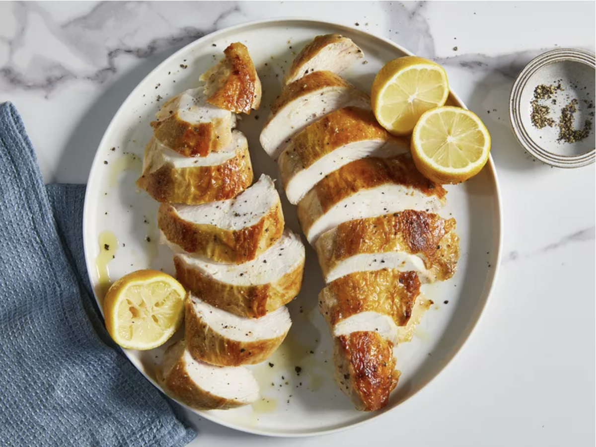

Sous Vide Chicken Breast

Description
“Sous vide” is French for “under vacuum” and in practice, (the chicken is) vacuum-sealed in a bag with some kind of seasoning or aromatic and cooked in a water bath at the desired final temperature of the food.
Reference from Chicken School
Ingredients
- 4 (4 ounce = 113 grams) skinless, boneless chicken breast halves
- 1 tablespoon vegetable oil
- 2 teaspoons herbes de Provence
- 2 teaspoons garlic paste
- ½ teaspoon salt
- 4 strips lemon zest
- 1 1 medium sous vide vacuum bag (can be substituted with microwavable zip locks)
Steps
- Set up a water bath and immersion circulator according to manufacturer's instructions. Bring water to 143 degrees F (62 degrees C).
- Place chicken, oil, herbes de Provence, garlic paste, salt, and lemon zest in a bowl. Mix until coated. Place in the vacuum bag in a single layer; seal.
- Submerge bagged chicken in the water bath and cook for 3 hours. Cool chicken in the sealed bag under cold running water.